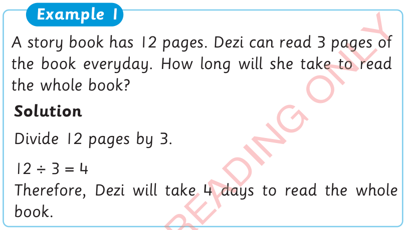
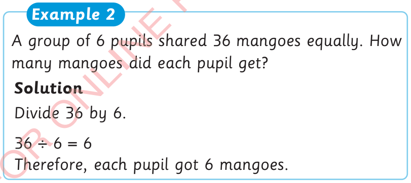

Word problems on division
Word problems involving division are questions written in one or more sentence.

Example 1
A story book has 12 pages. Dezi can read 3 pages of the book everyday. How long will she take to read the whole book?
Solution
Divide 12 pages by 3.
Therefore, Dezi will take 4 days to read the whole book.

Example 2
A group of 6 pupils shared 36 mangoes equally. How many mangoes did each pupil get?
Solution
Divide 36 by 6.
Therefore, each pupil got 6 mangoes.